-Trigonometry is the method of finding missing sides and angles in triangles.
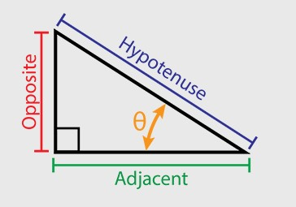
-It is applied when we know only one side length and one internal angle.
-"Opposite" is opposite to the angle θ
-"Adjacent" is adjacent to the angle θ
-"Hypotenuse" is the longest one
Uses of Trigonometry
Trigonometry is a very helpful way for measuring and finding values that requires very few present values. Trigonometry is heavily used in Engineering, Measuring, Navigation, Cartography, Satellite Systems and even in Criminology.
Sine, Cosine and Tangent
-Sine, Cosine and Tangent are the 3 main functions used in Trigonometry and are based on a Right-angled Triangle.
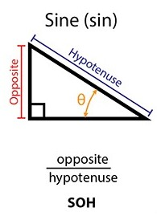
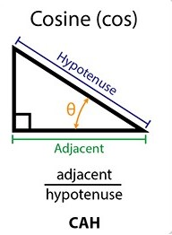
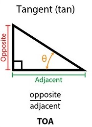
-An easier way to learn them is "sohcahtoa"
soh ---- Sine = Opposite/Hypotenuse
cah ---- Cosine = Adjacent/Hypotenuse
toa ---- Tangent = Opposite/Adjacent
|| Lets try and Example ||
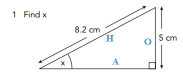
In this case, we can use Sine
Sin (x) = opposite/hypotenuse
Sin(x) = 5/8.2
x = Sin -1 (5.8.2)
x = 37.6°
Working on Problems
| Calculating Area Through Trigonometry |
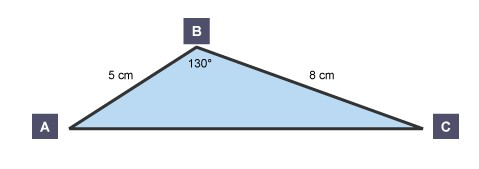
Area = 1/2 x AC x sin(B°)
Area = 1/2 x 8 x 5 x sin(130°)
Area = 15.32 cm2 (2 d.p.)
| Angles of Elevation and Depression |
Elevation
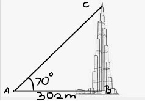
Find the height of Burj Khalifa
We can use tan in this case
tan(70°) = x/302
x = 302 x tan(70°)
x = 829.7m
Depression
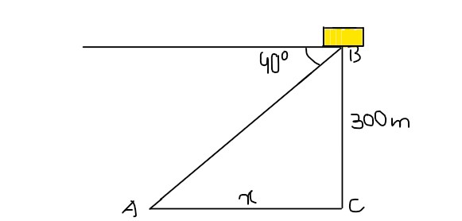
Find the distance between the tip of Burj Khalifa and A
We can use tan in this case
90-40 = 50
tan(50°) = x/300
x = 300 x tan(50°)
x = 357.5m
| Sine Rule |
Sine Rule can be used on any triangle if its angles and opposite sides are present
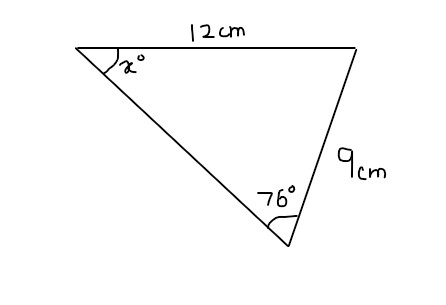
sin(A)/a = sin(B)/B
sin(A°)/9 = sin(76°)/12
sin(A°) = (sin(76°)/12) x 9
A° = sin-1((sin(76°)/12) x 9))
A° = 46.7°
| Cosine Rule |
Cosine Rule can be used on any triangle if one angle relates to all 3 sides of a triangle
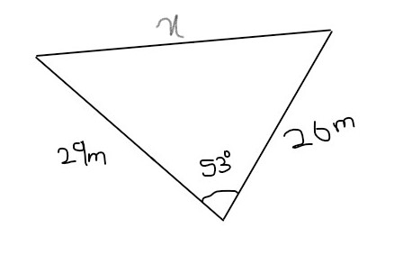
a2 = b2 + c2 - 2bc cos(A)
x2 = 26^2 + 29^2 - 2 x 26 x 29 x cos(53°)
x2 = 609.4629451 (root it in next step)
x = 24.7m
Q. Solve the questions with the help of the graphs:
1. Sin(x) = -0.5 between 0° & 360°
2. Cos(x) = -1 between 0° & 360°
3. Tan(x) = 0.5 between 0° & 360°
1. x = 210° & 330°
2. x = 180°
3. x = 26.565° & 206.565°
Bearings
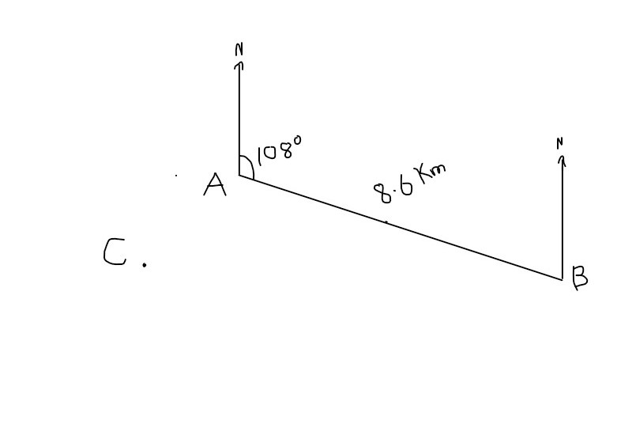
1. Find the bearing of A from B
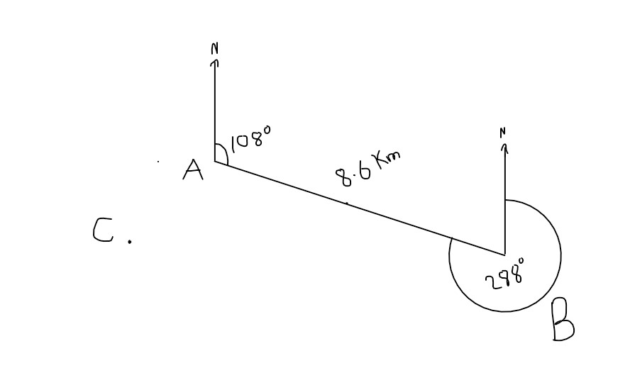
2.
a) Find the bearing of C from A
b) Find the distance between C and A (1 cm = 1km)
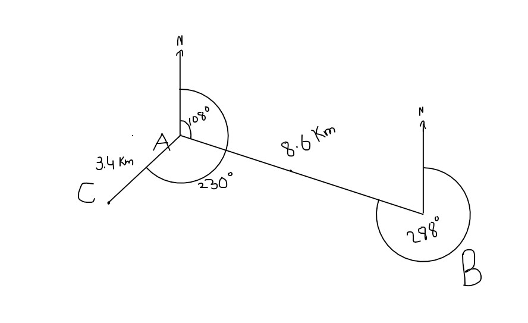
3. Find the distance betweem C and B (use Trigonometric methods only, Sine/Cosine Rule)
In this case we can use Cosine Rule
230-108 = 122
a2 = b2 + c2 - 2bc cos(A)
x2 = 3.4^2 + 8.6^2 - 2 x 3.4 x 8.6 x cos(122°)
x2 = 116.5096786 (root it in next step)
x = 10.8km
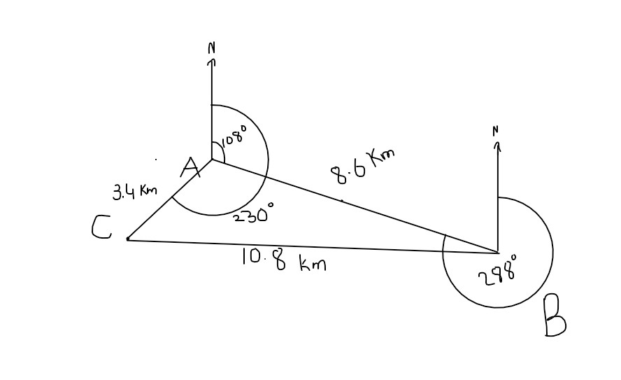
Note: Measurements of distance between points A,B,C for Bearings Question may vary on the viewer's display.
Made by Talha Ijaz 19479 10B for Maths CT3 Project